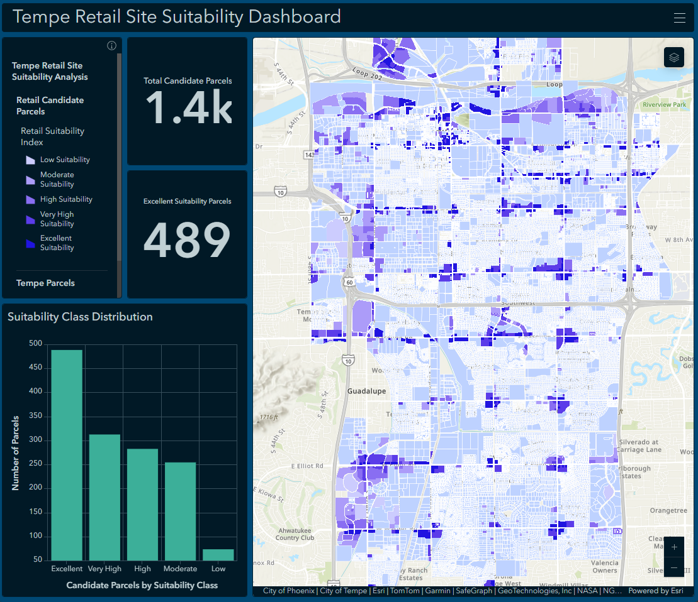

Decision Support GIS
Retail Site Suitability Dashboard
Tempe, Arizona
This project uses parcel data, land use context, accessibility measures, and population indicators to rank potential retail sites in Tempe, Arizona. The final output is an interactive ArcGIS Dashboard designed to support site comparison and location-based decision making.

Project Goal
The goal of this project was to identify and rank candidate retail parcels using a GIS-based suitability workflow. The dashboard helps compare sites based on surrounding population, transportation access, parcel characteristics, and land use context.
GIS Methods
- Prepared and cleaned parcel-level GIS data for suitability analysis.
- Used distance-based analysis to evaluate access to roads, bus stops, and light rail.
- Filtered parcels based on land use and development suitability conditions.
- Created scoring fields to rank parcels using multiple suitability indicators.
- Classified parcels into readable suitability categories for comparison.
- Published the results as a hosted web layer and configured an ArcGIS Dashboard.
Data Sources
- City of Tempe GIS data
- Maricopa County parcel and reference data
- Valley Metro transit access data
- U.S. Census Bureau ACS population data
- Esri basemap and ArcGIS Online web mapping tools
Skills Demonstrated
Key Takeaway
Retail suitability is not based on one factor alone. This project shows how GIS can combine parcel conditions, accessibility, land use, and population context into a practical decision-support tool for comparing candidate sites.
Limitations
This dashboard is a planning-focused screening tool, not a final site selection model. Suitability results could change with additional variables such as lease cost, ownership status, traffic counts, zoning restrictions, market demand, or business-specific requirements.